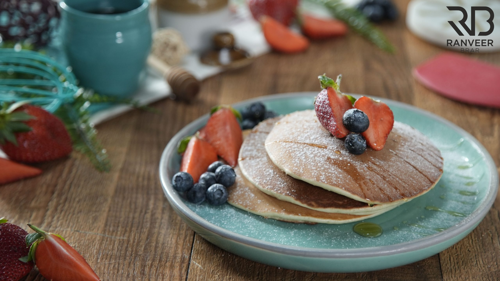

In a bowl add refined flour, powdered sugar, melted butter, vanilla essence, condensed milk, baking powder,
honey, milk and mix well and make a batter.
Now heat a non-stick pan and a ladle full of the batter and cook it until golden brown then flip it on to the
other side and cook that as well.
Repeat this process with the rest of the batter. And let them cool down a little.
Garnish it with strawberry, blue berry, maple syrup and icing sugar.
Serving immediately and enjoying it.

Made by Anshul Verma as a practical for University of Delhi.